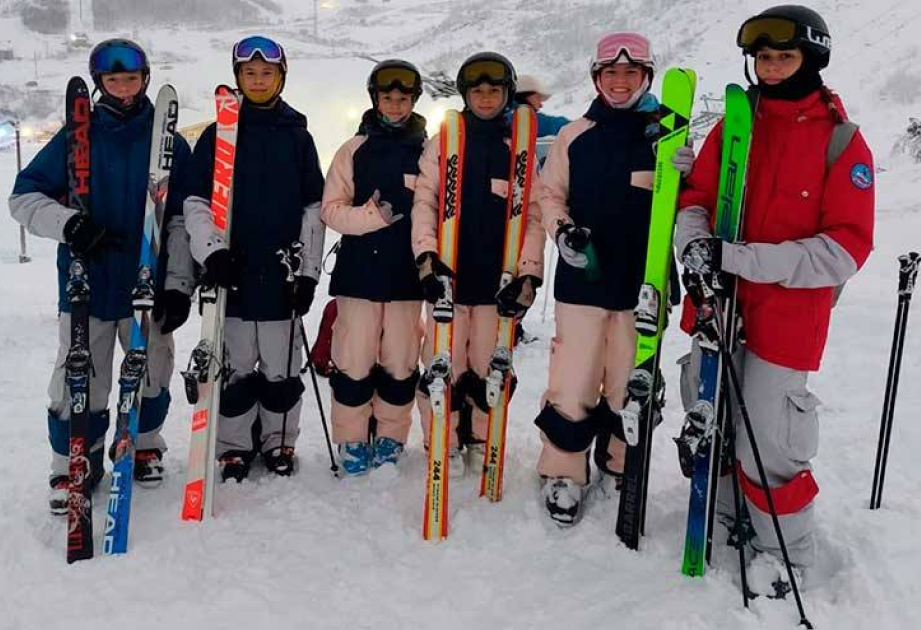

Томские фристайлисты готовятся к сезону в резерве сборной России
29 июня 2023
Продолжают подготовку к предстоящему зимнему сезону юные томские мастера фристайла. Сразу четыре спортсмена из Томской области были приглашены на тренировочные мероприятия в составе сборной страны.
Неоднократно томские фристайлисты гостили в городе Чусовой Пермского края. Ведь там с завидной регулярностью проводятся крупнейшие всероссийские соревнования. Не раз наши ребята привозили из Чусового медали разного достоинства. Теперь они выехали в Пермский край на сборы. В Чусовом началось тренировочное мероприятие резервного состава сборной команды России по фристайлу в дисциплинах могул и парный могул.
От Томской области были приглашены на сборы: Юлия Семенюк, Алиса Брюханова, Милана Карабанова и Мансур Рафиков. Ребята будут работать на водном трамплине над прыжковой программой, а также заниматься общей и специальной физической подготовкой.
